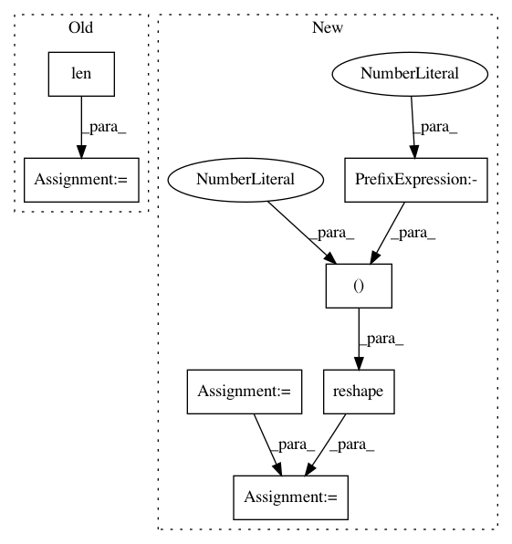

d14ad44d0f425c04be5a6cdca13fc513fba53843,test_models_train.py,,,#,11
Before Change
if __name__ == "__main__":
network_inputs = np.random.uniform(size=(3, 16, 16, 1))
model = convolutional_model(input_shapes=list(network_inputs[0].shape),
num_frames=len(network_inputs))
model.compile(optimizer="adam",
loss=deep_speaker_loss,
metrics=["accuracy"])
After Change
if __name__ == "__main__":
network_inputs = np.random.uniform(size=(BATCH_SIZE, NUM_FRAMES, 16, 16, 1))
model = convolutional_model(batch_input_shape=(BATCH_SIZE * NUM_FRAMES, 16, 16, 1))
model.compile(optimizer="adam",
loss="mse",
metrics=["accuracy"])
network_inputs = np.reshape(network_inputs, (-1, 16, 16, 1))
output = model.predict(network_inputs)
// stub_targets = np.expand_dims([0] * BATCH_SIZE * NUM_FRAMES, axis=1)
stub_targets = np.random.uniform(size=(BATCH_SIZE * NUM_FRAMES, 512))
print(model.train_on_batch(network_inputs, stub_targets))
In pattern: SUPERPATTERN
Frequency: 3
Non-data size: 7
Instances
Project Name: philipperemy/deep-speaker
Commit Name: d14ad44d0f425c04be5a6cdca13fc513fba53843
Time: 2017-06-12
Author: premy@reactive.co.jp
File Name: test_models_train.py
Class Name:
Method Name:
Project Name: scikit-optimize/scikit-optimize
Commit Name: 246339ce01898c92ce9e143895c5def9c46dcb78
Time: 2016-06-14
Author: g.louppe@gmail.com
File Name: skopt/gp_opt.py
Class Name:
Method Name: gp_minimize
Project Name: biolab/orange3
Commit Name: 5b58ab5c45be8923e5d74e3bc84101be1ad13066
Time: 2017-08-21
Author: ales.erjavec@fri.uni-lj.si
File Name: Orange/widgets/unsupervised/owmds.py
Class Name: OWMDS
Method Name: _setup_plot